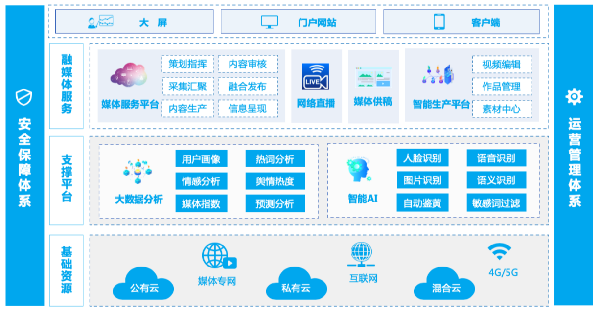

项目背景
2019年1月15日，中宣部、国家广电总局联合发布了《县级融媒体中心建设规范》。国家广电总局受中宣部委托，发布了《县级融媒体中心省级技术平台规范要求》。为更好引导群众服务群众，着力打造基层宣传思想工作和精神文明建设的重要平台，枣庄县开展融媒体中心项目建设，实现传统媒体与新媒体之间协同生产，传统新闻业务与新媒体业务的统一管控，实现与智慧枣强APP的互联互通，突出生产指挥调度、网络信息汇聚、融媒体稿件编排等重点内容，促进枣强县融合媒体快速发展。
解决方案
阳光云视根据中宣部和国家广播电视总局联合发布的《县级融媒体中心建设规范》的建设要求，按照“移动优先”的原则和“媒体+政务+服务”的建设思路，为枣强县融媒体中心建设项目提供统一的内容支撑、技术服务、数据分析等业务的一体化技术平台；完成与智慧枣强APP进行互联互通，实现一次生产、一次发布到多个媒体号和客户端和网站上，为枣强县融媒体中心提供融合媒体平台支撑能力。
